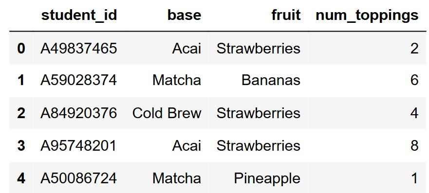
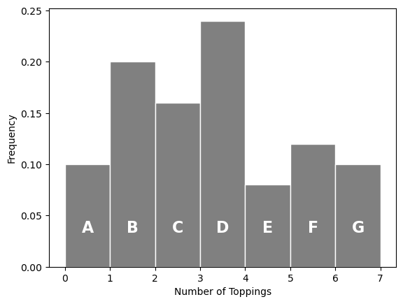

← return to practice.dsc10.com
This quiz was administered in-person. Students were allowed a
double-sided sheet of handwritten notes. Students had 20
minutes to work on the quiz.
This quiz covered Lectures
7-11 of the Winter
2025 offering of DSC 10.
⚠️ PDF version available here .
The DataFrame blue_bowl contains information about
orders placed by UCSD students at Blue Bowl, an on-campus eatery
specializing in custom bowls. For each order, we have the customer’s
"student_id", the "base" of their bowl, which
"fruit" they got, and the number of additional toppings,
"num_toppings". The first five rows are shown below.

Fill in the blanks so that the statement below outputs a DataFrame
showing the most popular base and fruit combinations in the
blue_bowl DataFrame, in descending order of popularity.
blue_bowl.groupby(__(a)__).__(b)__.sort_values(__(c)__)Answer (a): ['base', 'fruit']
We want combinations of base and fruit. Grouping by a list of two
columns makes one group for each unique (base, fruit) pair. Grouping by
only base or only fruit would count each one
separately.
The average score on this problem was 90%.
Answer (b): count()
Popularity means how many orders had each combination.
.count() gives the number of rows in each group.
.sum() would add up num_toppings, and .mean()
would average it. Neither one measures popularity.
The average score on this problem was 90%.
Answer (c):
"student_id", ascending = False
After using .count(), every remaining column holds the
same number (the size of the group). So sorting by any of the columns
work, but student_id is a safe choice. We need
ascending = False to put the most popular combinations
first. The default, ascending order, would put the least popular
first.
The average score on this problem was 84%.
Let five_bowls be the smaller DataFrame consisting of
only the first five rows of blue_bowl.
How many rows are in the DataFrame
five_bowls.merge(five_bowls, on="base")?
5
9
11
15
25
None of these
Answer: 9
9 is correct because a merge pairs every row in the left table with
every row in the right table that has the same base. If a
base shows up k times in five_bowls, it adds k × k rows to the result.
In the first five rows, the bases split as 2, 2 and 1 (two bases appear
twice and one appears once), so the result has 2² + 2² + 1² = 4 + 4 + 1
= 9 rows.
5 is incorrect because it assumes each row matches only itself. That
would only happen if all five bases were different. 25 is incorrect
because it assumes every row matches every other row, which would mean
all five orders had the same base. 11 and 15 are incorrect because they
don’t fit the 2/2/1 split of bases. 11 is the answer for
fruit, which has a different split.
The average score on this problem was 63%.
How many rows are in the DataFrame
five_bowls.merge(five_bowls, on="fruit")?
5
9
11
15
25
None of these
Answer: 11
11 is correct by the same rule. The fruits split as 3, 1 and 1 (one fruit appears three times and two appear once each), so the result has 3² + 1² + 1² = 9 + 1 + 1 = 11 rows.
9 is incorrect because it’s the answer for the base split (2/2/1), not the fruit split. 5 and 25 are incorrect for the same reasons as in 2.1. They would require all fruits to be different, or all to be the same. A common mistake is to add the counts (3 + 1 + 1 = 5) instead of squaring them. You have to square because each of the 3 matching rows on the left pairs with each of the 3 matching rows on the right.
The average score on this problem was 61%.
Suppose there are five available fruits: strawberries (red), bananas (yellow), raspberries (red), pomegranate (red), and pineapple (yellow). If Pranav orders a bowl with one fruit and tells you that the fruit is red, what is the probability he did not get strawberries?
Answer: 2/3
2/3 is correct because once we know the fruit is red, only three
fruits are possible: strawberries, raspberries and pomegranate. Each one
is equally likely. Two of those three are not strawberries, so
P(not strawberries | red) = 2/3.
4/5 is incorrect. It counts the fruits that aren’t strawberries out of all 5 fruits, which ignores the fact that the fruit is red. 1/3 is incorrect because that’s the chance he did get strawberries.
The average score on this problem was 84%.
The density histogram below shows the distribution of
"num_toppings" for 250 unique orders in
blue_bowl.

Kate orders a bowl with exactly two toppings. Which bin is her order included in?
A
B
C
D
E
F
G
Answer: C
C is correct because histogram bins include their left edge but not their right edge, except for the last bin. With bins one topping wide that start at 0 (A = [0, 1), B = [1, 2), C = [2, 3), …), an order with exactly 2 toppings goes in the bin that starts at 2, which is C.
B is incorrect. It’s the bin [1, 2), which ends at 2 but doesn’t include it. The other bins cover values far from 2.
The average score on this problem was 89%.
How many more orders were there with one topping than orders with no toppings? Give your answer as an integer rounded to the nearest multiple of 5.
Answer: 25
25 is correct because in a density histogram, the area of a bar is the proportion of data in that bin: area = height × width. Each bin is 1 topping wide, so a bar’s height equals the proportion of orders in that bin. The bar for one topping (B) is about 0.1 taller than the bar for no toppings (A). That means 10% more of the orders had one topping, and 0.1 × 250 orders = 25 more orders.
A common mistake is to read the difference in heights (≈ 0.1) as a count. Heights in a density histogram are proportions per unit, so you have to multiply by the total number of orders, 250.
The average score on this problem was 81%.
Fill in the body of the function prep_time such that
both expressions below evaluate to the same Series.
blue_bowl.get("num_toppings").apply(prep_time)
1.2 + 0.2 * blue_bowl.get("num_toppings")
def prep_time(x):
return Answer: 1.2 + .2 * x
1.2 + 0.2 * x is correct because .apply(prep_time) calls
prep_time once for each value in the num_toppings Series
and passes that number in as x. The second expression
applies 1.2 + 0.2 × (number of toppings) to every element. So the
function has to do that same math to a single number x.
1.2 + 0.2 * blue_bowl.get("num_toppings") is incorrect
as the function body. It would return a whole Series for every input
instead of one number. It also ignores x. Using
print(...) instead of return is incorrect. The function
would return None, so the result would be a Series of None values.
The average score on this problem was 80%.